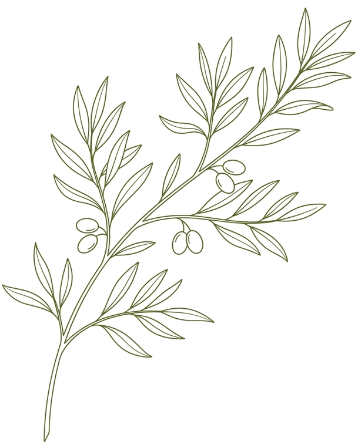

The Living Pharmacy
Nature provides everything we need to heal, ground, and restore our bodies. In these guided walks, we will explore the quiet corners of the forest to discover wild herbs, medicinal roots, and the ancient wisdom held within the flora around us.
It is a journey of slowing down—learning to identify, respectfully forage, and prepare nature's gifts. Reconnect with the soil, breathe the forest air, and let the earth remind you of your own natural state of balance.